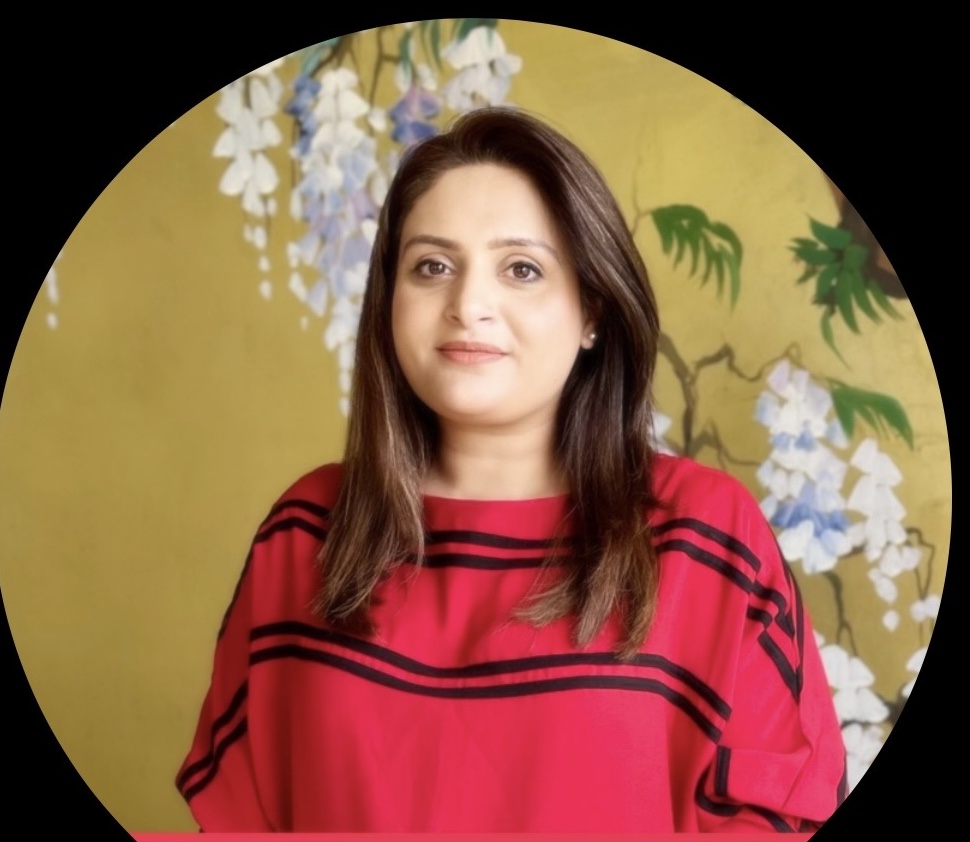
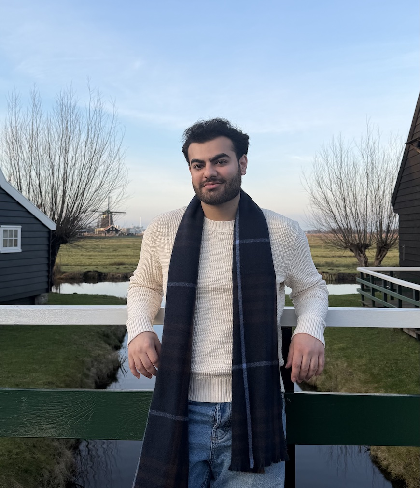

البكالوريوس
استشارات القبول الجامعي
اختيار الجامعات، واستراتيجية Common App وUCAS، والمواد الكتابية، والأنشطة، والمقابلات، ودعم القرار النهائي.
تقدم قصر للاستشارات دعماً خاصاً لطلاب البكالوريوس والماجستير في السعودية وقطر والإمارات وخارجها، للتقديم عبر Common App وUCAS إلى جامعات رائدة في الولايات المتحدة وبريطانيا وأوروبا وآسيا.
احجز استشارة مجانيةهي الجامعة التي تناسب طموح الطالب، وأهداف العائلة، ونقاط القوة الأكاديمية، والتكلفة، والحياة التي يتطلع إليها مستقبلاً.
خطة تراعي احتياجات الطلاب وأولياء الأمور في السعودية وقطر والإمارات وبقية دول الخليج.
دعم للتقديم إلى الجامعات شديدة التنافس، والجامعات المناسبة للطالب، والبرامج الدولية القوية.
تقبل قصر مجموعة صغيرة يتم اختيارها بعناية كل عام، حتى تحصل كل عائلة على إرشاد استراتيجي قريب ودعم مركز طوال رحلة القبول. تساعدنا الاستشارة الأولى على التأكد من أن الشراكة مناسبة للطرفين.
تبدأ كل رحلة بمراجعة خلفية الطالب الأكاديمية، والمنهج الدراسي، والدول المستهدفة، وأولويات العائلة، والجدول الزمني.
اختيار الجامعات، واستراتيجية Common App وUCAS، والمواد الكتابية، والأنشطة، والمقابلات، ودعم القرار النهائي.
اختيار البرامج، وخطاب الغرض، وتطوير السيرة الذاتية، والتوصيات، والمنح، والاستعداد للمقابلات.
تخطيط طويل المدى للأكاديميات والأنشطة والقيادة والبحث والتدريب والفرص الصيفية.
تجمع قصر بين خبرة الإرشاد الجامعي والفهم المباشر للتقديم إلى الجامعات العالمية التنافسية.

بخبرة تتجاوز 13 عاماً في الإرشاد الجامعي ومئات القبولات في جامعات رائدة، تساعد عائشة الطلاب والعائلات على الانتقال من الحيرة إلى خطة قبول واضحة.

يدرس راكين في جامعة بنسلفانيا، إحدى جامعات رابطة Ivy League، في كلية وارتون التي صُنّف برنامج الـMBA فيها الأول عالمياً في تصنيف QS لعام 2026. ويدعم الطلاب في تطوير المواد الكتابية وإبراز القيادة وبناء الملف.
التخطيط الجامعي لا يقتصر على تعبئة النماذج. هذه أمثلة على مخاوف شائعة نساعد العائلات على تنظيمها.
«كنت متفوقاً أكاديمياً، لكنني لم أفكر بجدية في القيادة والمبادرة وكيفية بناء ملف متكامل.»مخاوف شائعة · بناء الملف
«كانت عائلتي قادرة على تحمل التكلفة، لكنني كنت أخشى ألا تكون درجاتي كافية للخيارات التي أطمح إليها.»مخاوف شائعة · اختيار الجامعات
«كنا نفكر في عدة دول ولم تكن لدينا طريقة واضحة لمقارنة التخصص والتكلفة والحياة الطلابية والفرص المستقبلية.»مخاوف شائعة · اختيار الوجهة
يساعد الطالب في اختيار الجامعات، ووضع استراتيجية للتقديم، وتنظيم الجدول الزمني، وتطوير الملف الأكاديمي والأنشطة، والاستعداد للمقابلات واتخاذ القرار النهائي.
يستفيد معظم الطلاب من البدء قبل 12 إلى 24 شهراً من الالتحاق بالجامعة، مع توفر دعم مركز للطلاب الموجودين بالفعل في دورة التقديم.
نعم. نقدم إرشاداً لطلبات الجامعات الأمريكية عبر Common App والجامعات البريطانية عبر UCAS، إضافة إلى أنظمة التقديم المباشر.
نعم. نعمل مع الطلاب والعائلات في السعودية وقطر والإمارات وبقية دول الخليج عبر استشارات خاصة ومنظمة عبر الإنترنت.
أرسل نموذج الاستشارة أو تواصل معنا عبر واتساب. نراجع خلفية الطالب وأهدافه والدول المستهدفة والجدول الزمني قبل اقتراح خطة الدعم المناسبة.
شاركنا خلفية الطالب وأهدافه والدول المستهدفة والجدول الزمني، وسنقترح مستوى الدعم المناسب.